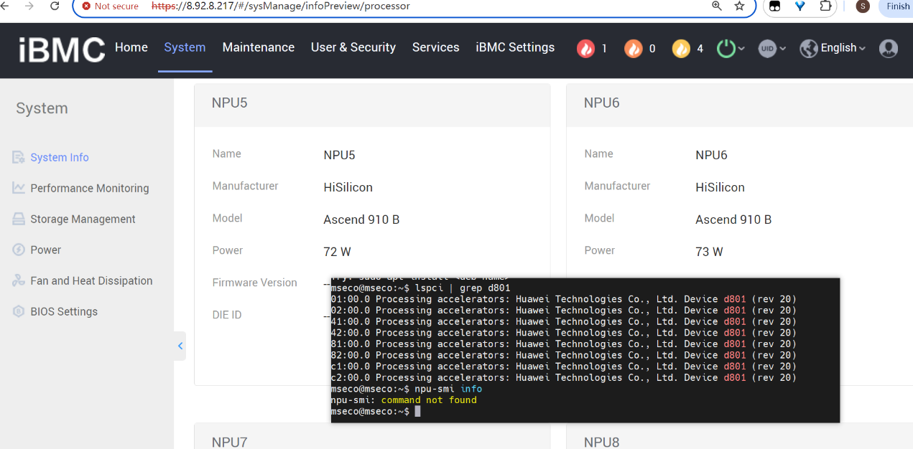
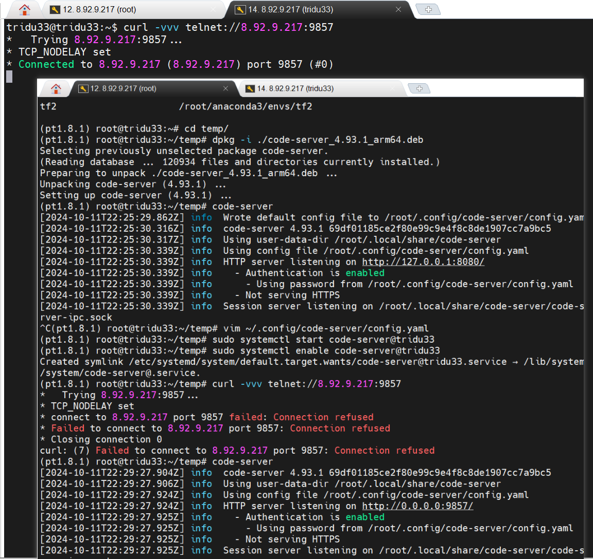

Ascend物理机安装CANN和MindSpore环境指导
前置阅读和资源准备
-
登录昇腾芯片的堡垒机或者物理机 登录堡垒机需要联系管理员获取相应资源
-
提前下载依赖包(版本对应关系和下载地址见下文)
- Ubuntu 20.04 iso安装包
- CANN及其kernel
- Anaconda安装配套MindSpore环境
VPN打通堡垒机的网络
(1) . 连接昇腾社区的VPN即可访问杭州的堡垒机
根据昇腾生态众智实验室网络连接指导，导入配置和根据管理员给的资源连接第一层VPN。
如果cmd能够ping 堡垒机IP 说明网络已打通，可以使用MobaXterm登录堡垒机。
(2) . 东莞-团泊洼的堡垒机还需连接第二层VPN
根据东莞-团泊洼堡垒机的网络环境VPN连接指引完成网络环境配置,即可登录堡垒机。
iBMC安装操作系统和NPU驱动固件
检查依据是npu-smi命令能否执行。

尽量使用hdk团队已经调通的操作系统版本和对应的固件，详情查看官网文档《版本配套表》，《版本配套表》外不做保证，需要用户自行安装前置依赖，解决冲突并源码编译NPU驱动和固件。截止到2024.10.11，内核5.15.122-generic的Ubuntu22.04源码编译还有适配问题，其他系统对照关系类似。 按照Altas800(9000)官方教程安装文档，推荐使用《版本配套表》中NPU驱动固件对应的操作系统版本使用二进制安装，不推荐源码安装。

推荐Ubuntu20.04上配套NPU驱动和固件
安装Ubuntu20.04操作系统
大部分按照Ubuntu安装教程操作即可

sudo groupadd msecogrp
sudo useradd -g msecogrp -d /home/mseco -m mseco -s /bin/bash
sudo passwd mseco
sudo vim /etc/ssh/ssh_config

sudo service ssh restart
mobaXterm连接之后
sudo apt upgrade -y
sudo apt update
uname -m && cat /etc/*release
uname -r
安装NPU驱动和固件
iBMC可以直接查看NPU型号，

然后去昇腾页面寻找对应版本安装文档即可。
sudo apt upgrade -y && apt update
会自动升级内核版本，由于内核版本升级导致当前内核版本未适配驱动。因此可以关闭自动升级内核的功能。
lspci | grep d801 # 查看NPU有多少张
sudo apt-get install -y net-tools pciutils && ifconfig
sudo apt-get install -y make dkms gcc linux-headers-$(uname -r)
groupadd HwHiAiUser
useradd -g HwHiAiUser -d /home/HwHiAiUser -m HwHiAiUser -s /bin/bash
chmod +x ./Ascend-hdk-910-npu-driver_6.0.0_linux-aarch64.run
sudo ./Ascend-hdk-910-npu-driver_6.0.0_linux-aarch64.run --full --install-for-all
chmod ./Ascend-hdk-910-npu-firmware_6.0.0.run
sudo ./Ascend-hdk-910-npu-firmware_6.0.0.run --full
reboot # 重启令驱动固件生效

npu-smi info 报错，根据教程https://bbs.huaweicloud.com/blogs/423686
设置白色这行

然后重启

这样说明驱动没有问题，还可以继续检查下
lsmod | grep drv
msnpureport -f
配套CANN和kernel
安装必备依赖组件
sudo apt install -y nano gcc g++ make cmake zlib1g zlib1g-dev openssl
libsqlite3-dev libssl-dev libffi-dev unzip pciutils net-tools
libblas-dev gfortran libblas3
chmod +x Ascend-cann-toolkit_6.0.1_linux-aarch64.run
./Ascend-cann-toolkit_6.0.1_linux-aarch64.run --install --install-for-all
安装完可以打印环境变量看看值是否正确写入。没有的话，需要自己写入一下到~/.bashrc或~/.zprofile：
bash /usr/local/Ascend/ascend-toolkit/set_env.sh
可以根据教程安装python3.7.5也可以安装Anaconda或者miniconda创建py37的环境，我这里使用Anaconda举例
conda create -n py37 python=3.7
mkdir -p $HOME/.pip
vim $HOME/.pip/pip.conf
配置华为源如下
[index-url = https://mirrors.huaweicloud.com/repository/pypi/simple]
[trusted-host = mirrors.huaweicloud.com]
[timeout = 120]
可以安装这些前置工具。
pip install attrs cython numpy decorator sympy cffi pyyaml pathlib2
psutil protobuf scipy requests absl-py wheel typing_extensions
安装MindSpore
推荐使用Anaconda，也可以用Ubuntu原生pip+python环境安装MindSpore。
-
验证Ubuntu、CANN、MindSpore版本配套关系
下图是检查NPU是否正常使用的命令：
npu-smi info
cat /usr/local/Ascend/version.info
cat /usr/local/Ascend/ascend-toolkit/latest/aarch64-linux/ascend_toolkit_install.info
cat /usr/local/Ascend/ascend-toolkit/latest/opp/built-in/op_impl/ai_core/tbe/kernel/version.info
python -c "import acl;"
cat /usr/local/Ascend/firmware/version.info
cat /usr/local/Ascend/driver/version.info
pip list | grep mindspore

'device_target'参数有 ['CPU', 'GPU', 'Ascend','Davinci']这几种情况，Davinci是Ascend旧叫法。
Q&A
1) 第三方SSH客户端登录Linux实例时，提示"Access denied"错误可能的原因： - SSH登陆账号的密码输入错误；
- MacBook或者Windows键盘布局或者输入法的大小写和特殊字符转义导致密码错误，

尝试sudo passwd root设置简单密码先试试能否登录；
- ssh_config配置没有正确设置
2) 安装Ubuntu之后能ping通iBMC IP无法ping通物理机ip
没有正确设置网络，推荐重装OS时参照iBMC网络配置，正确设置网卡：

开机之后可以检查网卡的ip是否正确设置

3) 远程开发答疑 可以安装code-server或者使用Pycharm远程开发。  此时本地就能远程visual code连接并开发

不要设置systemctl自动后台启动（会自动重启很多个后台服务），每次用的时候mobaxterm在tmux会话手动输入code-server本地开发即可。不推荐《版本配套表》外OS上源码编译NPU驱动和固件.